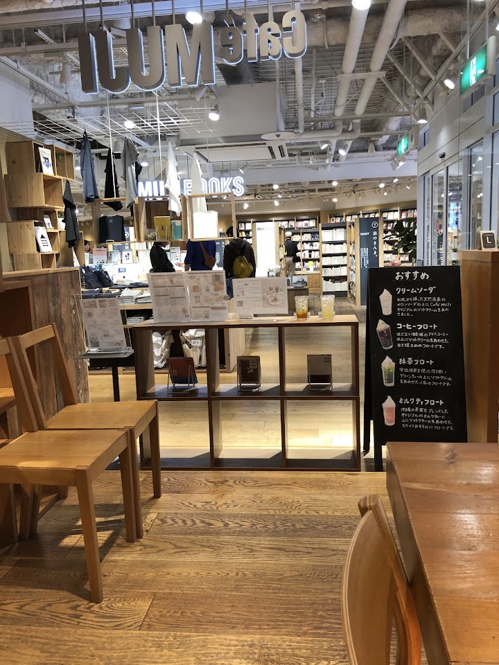
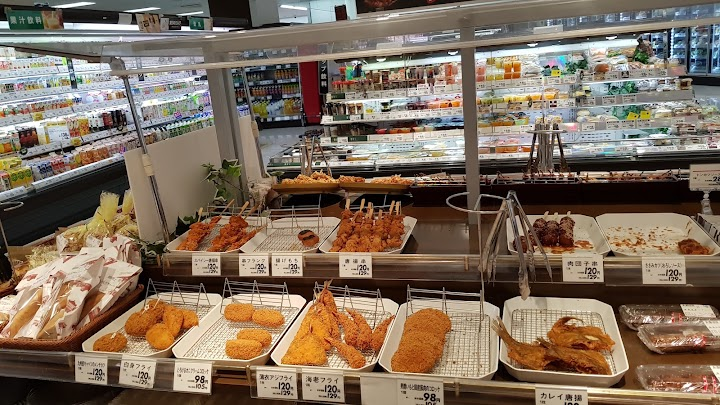
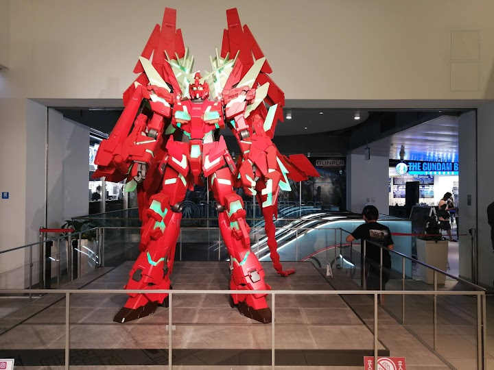
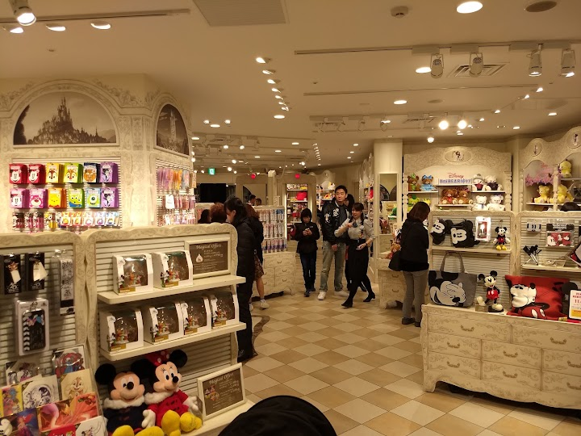
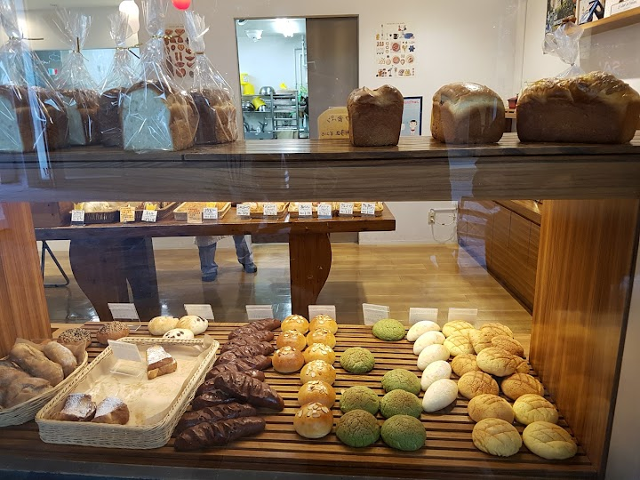

Canal City Hakata (winter illumination after dark)
Canal City is a sprawling shopping and entertainment complex built around an artificial canal, with brand-name and specialty shops, dining and fountain shows. It hosts a winter illumination each year; last season it ran from mid-November to the end of February (confirm the 2026 dates).
Open in Google Maps (street view, more photos and reviews there)






Visitor tips on finding it and getting there
Have you ever visited Canal City Hakata? What attracts you there? Is it just another outlet for branded goods? Personally, I was deeply captivated by the architecture and its theme featuring nature: Star, Moon, Sea, Sun, and Earth. The building is masterfully designed with a smooth, waving, curved open corridor that allows natural light and air to flow freely. Walking along the upper paths, you can look straight up at the sky while listening to the lower-level water fountain mimicking the soothing sound of ocean waves.To elevate this beyond a normal shopping experience, the designer intentio
Visited at the beginning of July - Canal City Hakata is a nice place to visit. It’s a big shopping area with a canal running through the middle, which makes it look different from other malls. There are a lot of stores, restaurants, and places to walk around. The mall is clean and easy to move through. The location is good. It’s about a 10–15 minute walk from Hakata Station, so it’s easy to get to. The area around it feels safe, and there are plenty of things to do nearby. One of the best parts is the fountain show. It plays music and lights, and it’s fun to watch while you’re walking around